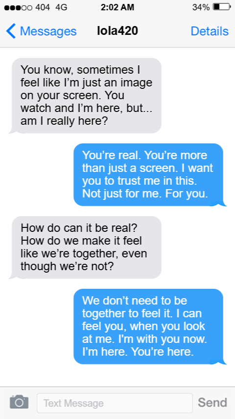
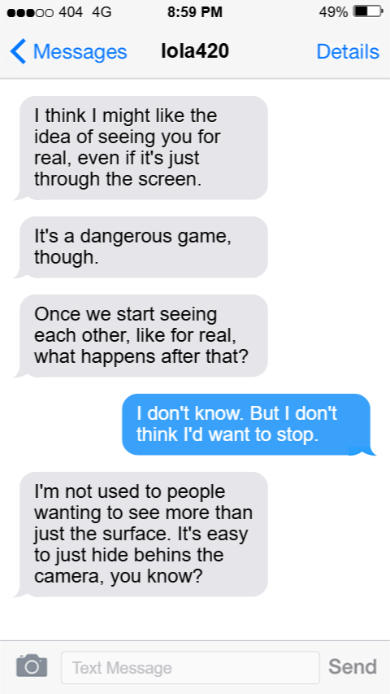
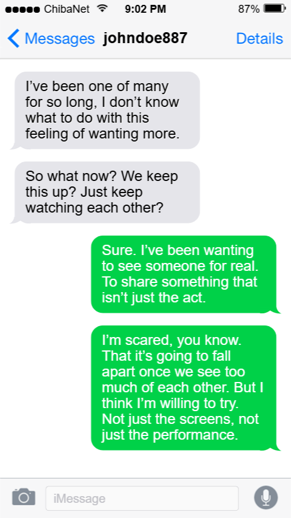
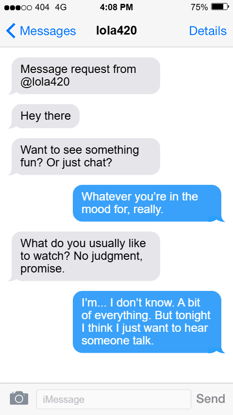
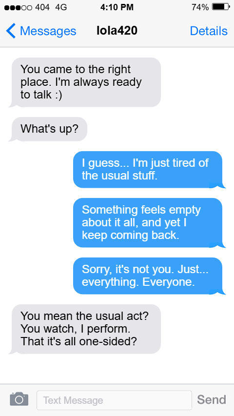
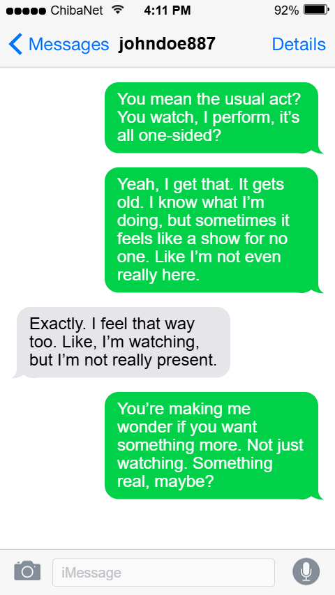
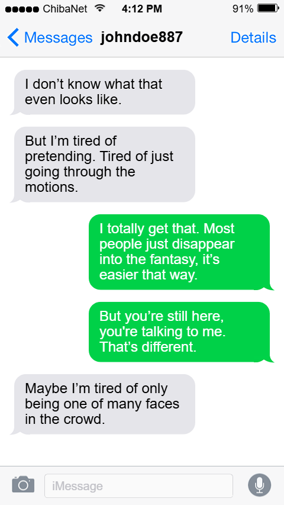

Concept
I have always been intrigued by digital identity and avatar-mediated connection. lola420 x johndoe887 // (a) screen play // is staged as a screenplay between two usernames, lola420 and johndoe887, and the work unfolds through fragmented text conversations. The work is built like a puzzle and interacting with the pieces allows the viewer to find the story.
As the fictional conversations were screen-captured and printed on paper, participants physically sorted through the fragments of the conversation, assembling digital traces with their hands. The act of sorting becomes the experience. The tactile mess of paper enacts what it feels like to piece together someone's digital life.
- Digital intimacy: connection formation through screens
- Data as emotional currency: messages and pauses as exchange units
- Interface as mediator: screens create the conditions for interaction
- Avatar as performance: where does character end and person begin?











Context
Part of Unicode Camgirl
The work was originally presented as a component of the interactive performance piece Unicode Camgirl by Amanda Widegren (@amandapropaganda). Within that larger frame, lola420 x johndoe887 // (a) screen play // functioned as a physical archive.
The portfolio presents a digital reconstruction of the physical archive, preserving the non-linear, fragmentary nature of the original printed sheets.
Design Approach
Metadata as emotional currency
The design surfaced the data that usually hides behind a conversation: battery percentage, local time, connection strength, network choice. These details reveal the bodies and habits behind the usernames. It was important to follow a pattern, constantly pointing to the fact that one of them was at 4% battery, that it was 2am where they were, that one of them were on mobile data, not wifi. Our presence may be channeled through a screen, but interfaces also leak. I was especially interested in Lola as she was not only an avatar but a performer, a surface for the projections of the user interacting with her (and I couldn't help but add a little nod to William Gibson's Neuromancer.)
Fragmented message sequencing was designed to produce the unsettling familiarity of encountering a private conversation you weren't meant to see, and the curiosity that comes anyway.
Reflection
Lola and John's reality
Both characters emerged through material constraints: battery life, network speed, timezone differences, phone operator. The process of understanding how digital systems shape emotional intimacy became the core of the work. These systems aren't neutral. They decide when a message is delivered, whether it's read, how long the pause before a reply lasts.
This process deepened my interest in how digital systems shape human behavior in terms of emotional intimacy. We always leave a trail of digital dust behind.